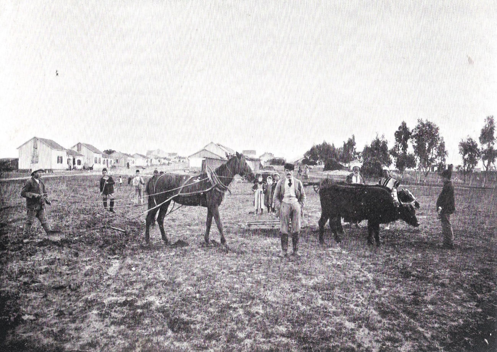
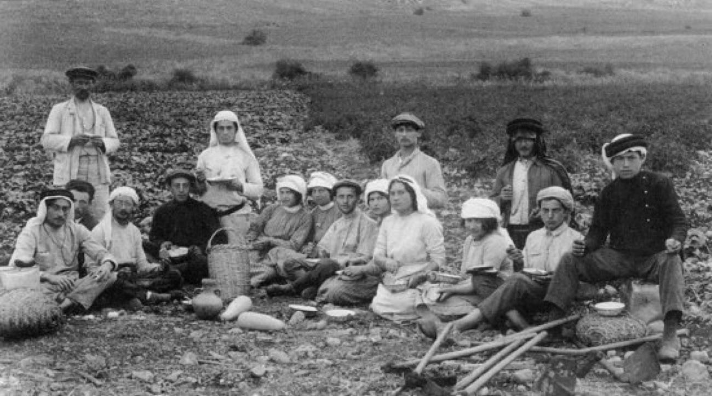
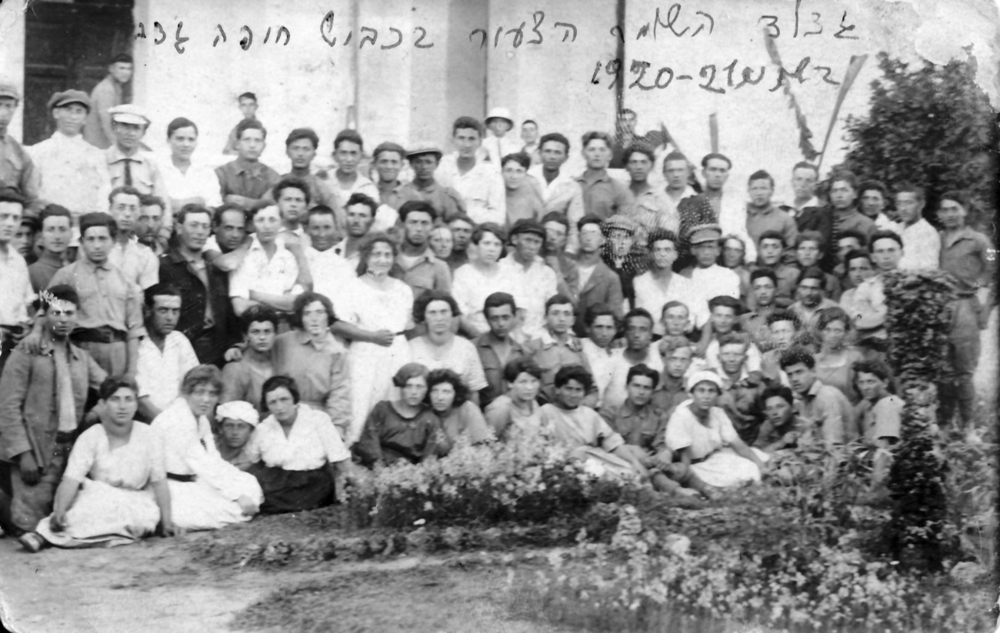
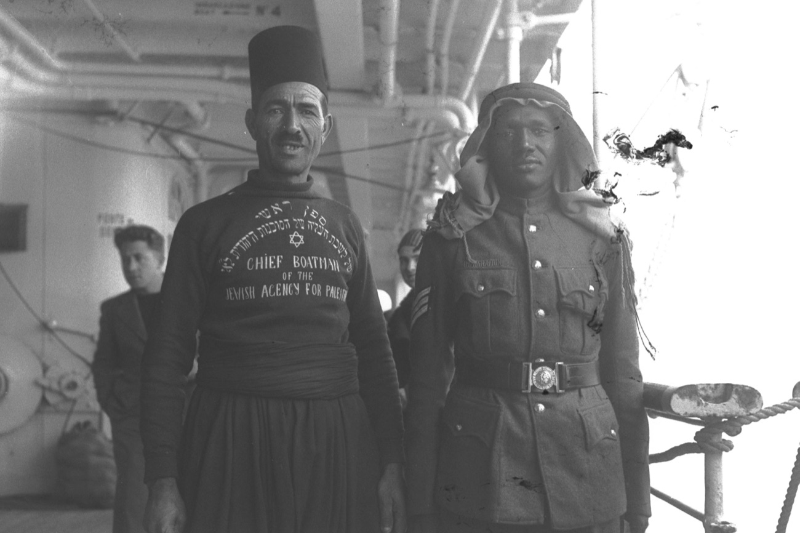
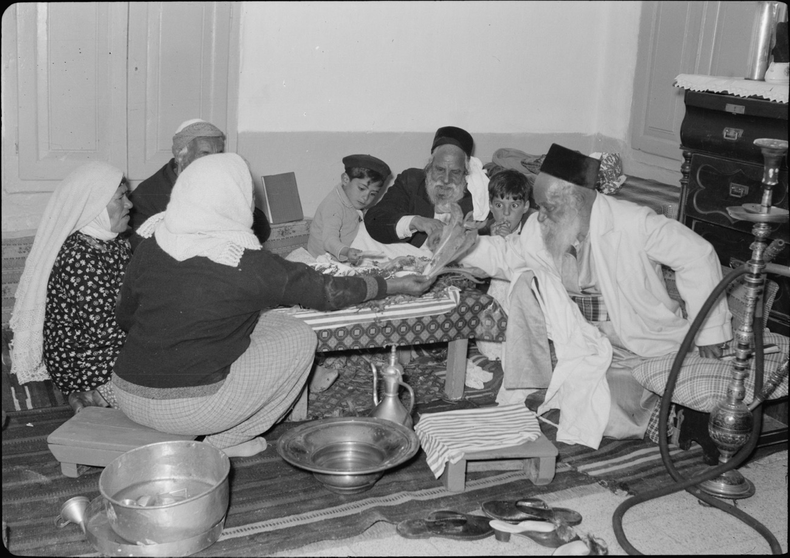

"We are not idealists." — David Koheleth, an unemployed shoemaker writing for a family of ten — to the Zionist Palestine Office itself, March 1913.
Political Zionism remained a minority organizational affiliation among world Jewry through 1939 — peaking near ~6%. Migration to Palestine was usually refugee-, economic-, family-, or constraint-driven rather than primarily pre-arrival ideological — except, most clearly, in the Third Aliyah. Affiliation and institutional centrality rose sharply after Balfour and were reinforced under interwar catastrophe. Two measurement windows with different denominators — migration motive and organized affiliation — independently point the same way.





Five waves, five worlds — all images public domain. The conviction-driven "personal statement" the cover form expects fits, at most, the pioneer plates (Second and Third Aliyah); the colony farmer, the German refugee, and the Yemenite family came by other roads.
Only the Third Aliyah approximates the conviction-driven self-image; every other wave was majority economic/refugee with a small ideological vanguard. The figure historiography usually cites (the Gorny 1935 labour-archive census) measured survivors, not arrivals — a cohort thrice-selected by surviving the trip, surviving yerida, and staying labour-affiliated. Alroey's at-embarkation registers capture the cohort before those filters.
| Wave | Years | Arrivals | Ideologically committed | % conviction | % economic / refugee | Yerida |
|---|---|---|---|---|---|---|
| First | 1882–1903 | ~25–35k | 10–15% | 70–80% | 50–60% | |
| Second | 1904–1914 | ~35–40k | 10–20% | 60–70% | 70–80% | |
| Third | 1919–1923 | ~35k | 40–50% | 45–55% | 30–40% | |
| Fourth | 1924–1928 | ~82k | 15–20% | 75–80% | ~25% | |
| Fifth | 1933–1939 | ~247k | 15–20% | 80–85% | 20–30% |
Of 989 migrant letters Alroey coded: 65% "work a trade," 17% buy land, 10% declared Zionist conviction, 8% other. No opinion polling existed before 1947 (Guttman); the estimate triangulates coded letters, at-embarkation registers, revealed preference (destination + yerida), and Lavsky's three-layer composition model.
The WZO shekel (annual dues = the right to vote for Congress delegates; one delegate per 100 holders) is the broadest organized-Zionist count. The series — from Fraenkel's History of the Shekel and the 1946 Survey of Palestine — shows the affiliation surge was first post-Balfour, then reinforced by the 1930s: the big jump is 1913 → 1921, not "especially post-1933." Even at the 1939 peak, organized Zionists were only ~6% of world Jewry.
| Year · Congress | Shekel-holders | Share of world Jewry | Share |
|---|---|---|---|
| 1897 1st | ~8,000 | <0.1% | |
| 1898 2nd | 78,000 | ~0.7% | |
| 1899 3rd | ~114,000 | ~1.1% | |
| ~1913 11th | ~130–230k | ~1–1.7% | |
| 1921 12th · post-Balfour | 770,000 | ~5.3% | |
| 1935 19th | ~1,000,000 | ~6.4% | |
| 1939 21st | 1,040,540 | ~6.3% | |
| 1946 22nd | 1,843,000 | — |
The 1939 peak, by community — a diaspora minority, a Yishuv majority
In the Russian-Empire Jewish labour/socialist milieu at the 1906 mobilization peak, the explicitly Palestine-Zionist party was the smallest organized faction — out-organized by Bundist diasporism and territorialism ~3.7 : 1. In interwar Poland, Gorny (a Zionist historian) puts it plainly: "Zionism for its minority… and the Bund for the majority" of the Jewish working class.
| Party · 1906 | Orientation | Members | |
|---|---|---|---|
| Bund | Diasporist (doikayt) | 35,000 | |
| SSRP | Territorialist-socialist | 24,000 | |
| Poale Zion | Palestine-Zionist | 16,000 | |
| SERP | "Sejmist" | 7–15,000 |
"…the Zionists, who by no means formed a majority of the Jews before the war, began to clamour more vociferously for political rights in Palestine. They succeeded in securing a good many supporters from amongst those who were not in the beginning prepared to support their co-religionists in their attempt to form themselves into a political State."
Primary migrant letters (early-20th-c. documents reproduced in Alroey) unless noted. The register is the finding: livelihood and safety, destination substitutable, ideology a minority note. Green = the dominant economic/refuge/family register; red = the conviction minority.
The same three registers, in the period's published literature rather than its migrant letters. The pioneer poem is genuine — but the movement's own novelists wrote the disillusionment, and the far larger migrant stream's verse was written in Yiddish, in New York. Red = the conviction self-image · green = the documented reality · blue = the destination most olim chose instead.
"Dress me, good mother, in a glorious coat of many colours
and with dawn lead me to toil.
My country wraps itself in light as in a prayer-shawl …
and like phylactery-straps, the highways that palms have paved glide down."
Isaac Kumer "ascended to the Land of Israel to build it … and to be rebuilt by it" — then, instead of tilling the soil, paints houses in Jaffa and signboards in Jerusalem.
"What never failed to crush him was the utter pointlessness of it all … as a Jewish 'farm-hand' always looking for work."
"I am a machine. I work, and work, and work without end … For what? and for whom? I know not, I ask not."
"Only rarely … I see him, my little son, when he is awake; I find him always asleep."
A dramatization, not evidence — but each voice is built from the documented attitudes above. The exercise: run a dozen representative olim, 1800–1950, against a modern Aliyah-application "personal statement" box. The form itself encodes a thesis — it assumes an ideological Zionist who can articulate National Service, an Employment plan, and a conviction-driven statement. Watch how few can fill the box the form wants filled. FITS = could write the statement the form expects.
The payoff: only #3, #5, #9 — the Bilu, the labour halutz, the Third-Aliyah halutz — can write the conviction-statement the form is built to receive. Three of twelve; weighted by the demographic mass each type represents (economic / refugee / family / religious vastly outnumbered the vanguard), it collapses to the corpus's ~10–15%. The form is a vanguard self-portrait — designed by the ~10% for an applicant who looks like the ~10% — which is precisely why the pioneer image survived: the conviction-statement writers were the ones the institutions remembered.
The evidence points less to early mass ideological Zionism than to constraint-mediated preference and conviction formation: Zionism became more compelling as emancipation, diasporist socialism, territorial alternatives, and overseas migration channels failed or closed. This is not a binary of "constraint vs. conviction" — people can become sincerely Zionist because alternatives collapse (the "Hitler Zionists" are real Zionists). The honest framing is not "Jews rejected Zionism." It is: mass Jewish life before the catastrophe was not primarily organized around political Zionism — even as Zionist institutions became increasingly central, and even though a real, economically-suppressed attachment to the Land existed across much of Jewry. The conviction-driven vanguard was real, small, and roughly constant; the demographic mass that filled the homeland came for the reasons migrants come.
Sources. Gur Alroey, An Unpromising Land (2014), Bread to Eat and Clothes to Wear (2011), Zionism without Zion (2016); Hagit Lavsky, The Creation of the German-Jewish Diaspora (2017); Jonathan Frankel, Prophecy and Politics (1981); Yosef Gorny, Converging Alternatives (2006); Walter Laqueur, A History of Zionism (1972/2003); David Vital, Zionism: The Formative Years (1982); Joseph Fraenkel, The History of the Shekel; A Survey of Palestine (1946), vol. II, p. 907 (the 1939 shekel-holder count); world-Jewry denominators from the Jewish Virtual Library.
Scope & caveats. No opinion polling existed before 1947 — every figure is inference from documentary and behavioural proxies; general sympathy (as distinct from membership) is genuinely unmeasured, so this is a minority-organizationally-through-1939 argument, not a claim about majority sentiment. Conviction shares are ranges, not point estimates. The ~1913 shekel mid-point is soft (Fraenkel's "doubled" ≈ 230k vs. a ~1% reading ≈ 130k); the 1921, 1935 and 1939 anchors are firm. The "dozen olim" gallery is grounded imaginative reconstruction, clearly distinct from the primary quotes above it. Full memo and footnotes are in the research repository.